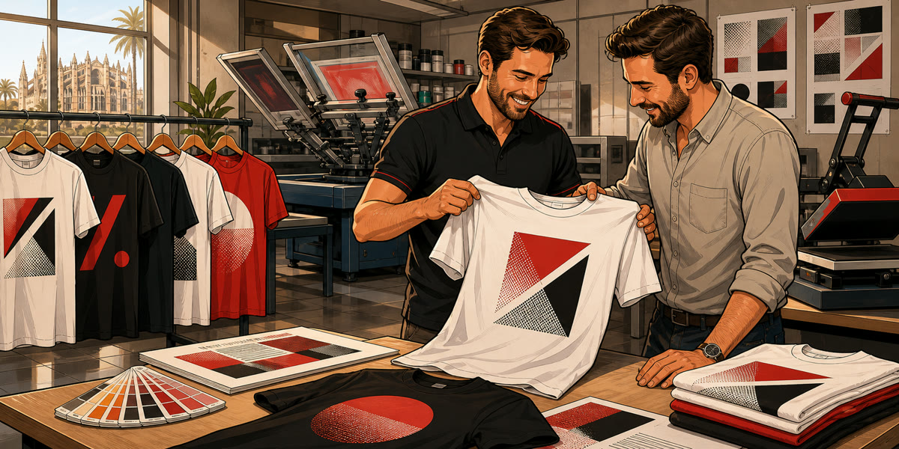

Empresas
Camisetas para equipos, campañas, uniformidad o eventos.

Camisetas personalizadas Mallorca
Camisetas para empresas, eventos y equipos. La técnica, cantidades y plazos se revisan antes de presupuestar.
Camisetas para equipos, campañas, uniformidad o eventos.
Serigrafía, estampación u otra técnica se confirma según el trabajo real.
No hay compra online; se revisa el diseño y se recoge en Palma.
Textil personalizado
Las camisetas personalizadas pueden utilizarse como uniforme, merchandising, ropa para eventos, equipos, campañas o acciones promocionales. En Imprenta Disgraf revisamos cada pedido según diseño, número de prendas, colores, posición de impresión y plazo.
La técnica adecuada depende del tipo de prenda, cantidad, acabado esperado y diseño. No siempre conviene la misma solución para una tirada pequeña que para una producción más amplia. Por eso confirmamos el proyecto antes de presupuestar y valoramos si el archivo está preparado correctamente.
El trato es presencial y local. Puedes consultarnos por email, teléfono o venir a Calle Manacor 36 para revisar opciones de personalización textil y recoger el trabajo en Palma.
Dudas frecuentes
Se define según cantidad, diseño, colores, tejido y acabado deseado. Lo revisamos antes de confirmar presupuesto.
Puedes enviar el archivo o consultarnos. Revisamos si sirve para impresión textil y si necesita adaptación.
No. La producción se confirma por presupuesto personalizado y la recogida se realiza en la imprenta.